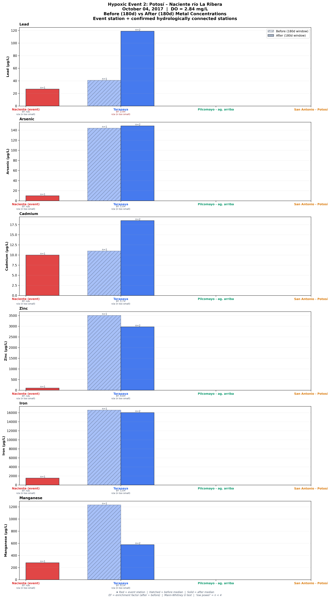
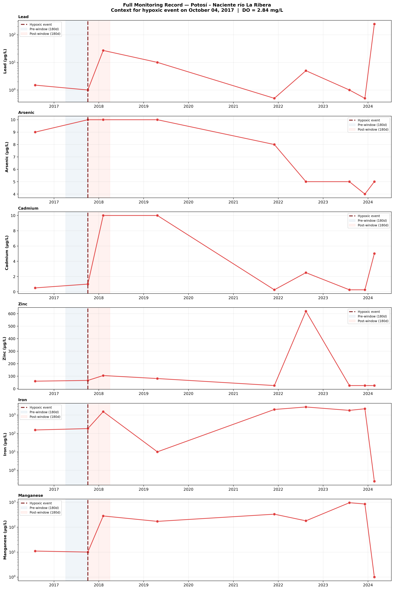
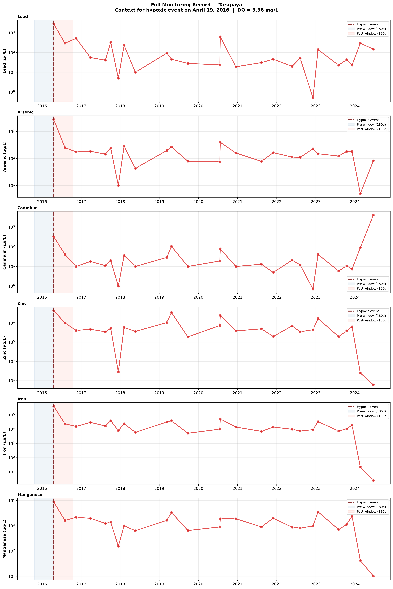
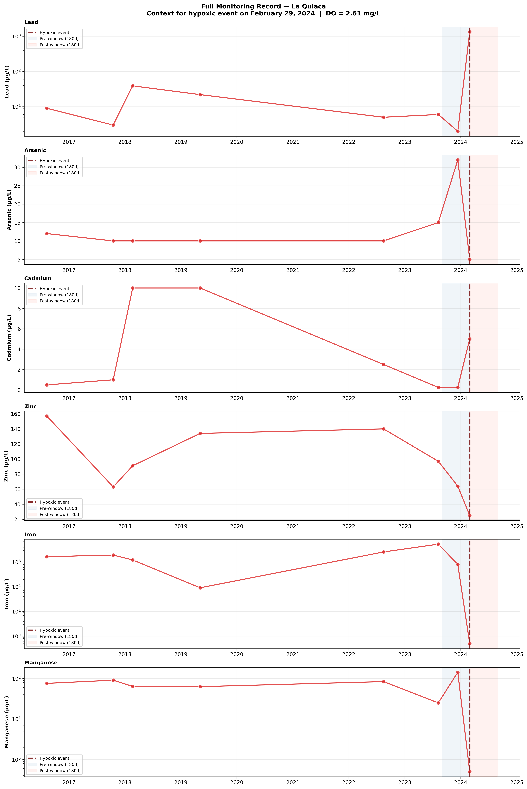

When Oxygen Disappears, Metals Mobilize
Dissolved oxygen below 4 mg/L disrupts the redox equilibrium that keeps metals locked in riverbed sediments. We identified three such events across 8 years of monitoring. One — October 2017 at Naciente — had full before-and-after data. Lead tripled in the water column.
A Rare Disruption in an Otherwise Oxic System
Dissolved oxygen remains above 4 mg/L in 98.5% of the monitoring samples spanning 27 stations and eight years of record. Hypoxia is a genuine departure from the basin's normal state — not a routine feature — which makes the three events identified here meaningful signals rather than background noise. All three occurred in the Potosí headwater mining zone, where high organic loading from tailings impoundments elevates microbial oxygen demand during the reduced-turbulence conditions of early wet-season flow.
Oxygen Depletion as a Metal Mobilization Trigger
In aerobic conditions, riverbed sediments are dominated by manganese(IV) and iron(III) oxide minerals that serve as the primary sorption scaffolding for dissolved metals. When dissolved oxygen drops below 4 mg/L, anaerobic microbes begin using these oxide minerals as electron acceptors — a metabolic process called dissimilatory metal reduction — dissolving the mineral phases and releasing their adsorbed metal cargo directly into the water column. The critical point: not all oxide minerals are equally vulnerable.
Events Across the Study Period
The October 4, 2017 event at Potosí – Naciente río La Ribera (DO = 2.84 mg/L) is the only event in the dataset with both pre- and post-event sampling data at a hydrologically connected downstream station, making it the evidentiary anchor for the entire analysis.
Hydrologic connectivity and data availability: The Pilcomayo's complex tributary structure means that downstream metal transport cannot be assumed across separate sub-tributaries. Hydrologic mapping identified four stations as part of the event's catchment: Naciente río La Ribera (the event station), Tarapaya, Pilcomayo agua arriba confluencia, and San Antonio – Potosí. Of these, only Tarapaya had sampling data within the 180-day pre- and post-event windows required for enrichment comparison. This is a methodological strength — the analysis is conservative by design, including only stations where connectivity and data availability are both confirmed.
Findings (Tarapaya station, n = 1 pre-event / n = 2 post-event): Lead showed the most dramatic response, rising from 40.0 µg/L pre-event to 119.5 µg/L post-event (3.0× enrichment). Cadmium increased modestly from 11.0 to 18.0 µg/L (1.6× enrichment). Arsenic and iron remained effectively stable throughout the post-event window. The arsenic and iron stability is itself a scientifically significant outcome — it provides direct empirical evidence that the abundant iron oxide substrate in Pilcomayo sediments buffers these elements against hypoxic release, an outcome predicted by the partitioningThe equilibrium distribution of a dissolved substance between water and sediment. Quantified by Kd; controlled by the substance's chemistry, the sediment's mineral composition, and water-chemistry parameters such as pH and dissolved oxygen. analysis and confirmed here in the field.

What you are looking at: Each pair of bars shows the median water-column concentration of one metal at Tarapaya station — hatched bar = pre-event median (180-day window before Oct 4, 2017); solid bar = post-event median (180-day window after). A taller solid bar means more metal dissolved in the water after the event.
Technical detail: Tarapaya is the only hydrologically confirmed downstream station with qualifying samples in both windows (n = 1 pre / n = 2 post). Enrichment factors (Pb 3.0×, Cd 1.6×) are descriptive effect sizes; sample sizes preclude formal Mann-Whitney significance testing. As and Fe bars show effectively equal heights, consistent with the report's finding that Fe-oxide substrate buffered these metals against hypoxic release. Units: µg/L dissolved concentration.

What you are looking at: Dissolved metal concentrations (µg/L) plotted month-by-month across the eight-year record at the Naciente event station and connected downstream stations. The dashed vertical line marks the October 4, 2017 hypoxic event; gray shading covers the 180-day pre-event (blue) and post-event (red) windows used for the enrichment calculation.
Technical detail: Lead is plotted on a log scale to capture the multi-order-of-magnitude range across the record. The immediate post-event spike in dissolved Pb at Naciente is followed by a sustained multi-year elevated period through approximately 2020, before declining. Arsenic and cadmium show a similar trajectory — peak during 2017–2018, then decline. Iron and manganese concentrations (not shown) varied one to two orders of magnitude in the post-event window, consistent with reductive oxide dissolution under low-oxygen conditions.
No pre-event baseline exists for this event. Systematic monitoring at the Tarapaya station commenced concurrently with the April 2016 hypoxic episode — the event effectively coincides with the start of the monitoring record at this location. Without a qualifying pre-event sampling window, it is not possible to compute an enrichment factor or determine how much metal concentrations changed relative to a pre-hypoxia baseline.
The time-series below shows what the available data capture: dissolved metal concentrations through and beyond the event date. The record documents conditions during and after the episode but cannot quantify the mobilization magnitude by comparison to a prior state. DO = 3.36 mg/L makes this the least severe of the three events, though "least severe" in this basin context still represents a genuine redox departure from the 98.5% oxic norm.

What you are looking at: Dissolved metal concentrations (µg/L) at Tarapaya across the monitoring record around April 2016. The gray band marks the hypoxic window (DO = 3.36 mg/L). Because systematic monitoring at Tarapaya began with this campaign, there is no data to the left of this record — the absence of earlier points is not a gap in the data, it is the start of the record.
Technical detail: No pre-event 180-day window was available; enrichment factors cannot be calculated. Data shown are dissolved concentrations (µg/L) from water-column samples at the Tarapaya station only. The time-series is presented without enrichment analysis rather than excluded, because the event's occurrence and the measured concentrations during and after the episode remain scientifically informative in a descriptive context.
No post-event data are available for this event. The February 2024 episode at La Quiaca coincides with the final sampling campaign in the available monitoring record. Without a qualifying 180-day post-event window, the enrichment analysis cannot be applied — the same methodological standard used for Event 2 cannot be met.
The severity of the oxygen depletion (DO = 2.61 mg/L, the lowest recorded value in the eight-year dataset) warrants attention. If DO severity correlates with mobilization magnitude — as the mechanism predicts and Event 2's data support — then Event 3 may have produced the largest metal release pulse of the three. This remains unconfirmed pending continued monitoring at La Quiaca and connected downstream stations in subsequent years.
This event also sits within a broader 2024 emerging-contamination story documented in the basin's sediment record: the same 2024 wet-season campaign recorded mercury concentrations of 2.3 mg/kg and cadmium at 5.0 mg/kg — both record highs in the eight-year monitoring period and more than thirteen times the USEPA freshwater sediment guideline for mercury. The synchronous escalation of multiple contaminants suggests upstream source changes that compound the hypoxia risk. The full 2024 contamination narrative is documented on the Sediment Texture page.

What you are looking at: Dissolved metal concentrations (µg/L) at La Quiaca across the monitoring record around February 2024. The gray band marks the hypoxic window (DO = 2.61 mg/L, the lowest dissolved oxygenThe concentration of molecular O₂ dissolved in water. Reported in mg/L. Below ~4 mg/L, anaerobic microbial processes can begin reducing iron- and manganese-oxide minerals in sediment. value in the eight-year dataset). The record ends shortly after the event — the absence of points to the right represents the current monitoring horizon, not a data gap within the study period.
Technical detail: No post-event 180-day window is available; enrichment factors cannot be calculated. The pre-event trend leading up to February 2024 provides qualitative context for how metal concentrations were behaving before the oxygen depletion episode, but a controlled before/after comparison is not possible without continued sampling.
October 2017 Confirmed the Partitioning Predictions
The sediment-water partitioning analysis on this site made specific, testable predictions about how each metal would respond to oxygen loss — predictions grounded in which mineral phases hold each metal under oxic conditions. Event 2 is the first empirical test of those predictions in the Pilcomayo Basin. The match between prediction and observation is the core scientific value of this page.
Correlation coefficients (ρ) and p-values from SpearmanA statistic that measures how monotonically two variables move together. Values range from −1 (perfectly inverse) through 0 (no monotonic relationship) to +1 (perfectly aligned). rank analysis of 265 paired sediment-water samples (264 for Cd) across 27 stations, 2016–2024. Enrichment factors from Event 2 are descriptive effect sizes (n = 1 pre / 2 post at Tarapaya); see the methodology callout in the Event 2 section above. Cross-links lead to the full mechanistic analysis on the Sediment Partitioning page.
What the Data Prove, and What They Demand
Event 2's data, cross-validated against the partitioning analysis, allow two empirical conclusions and three concrete management implications. The partitioning theory holds: the metals that the mechanism predicted would mobilize did mobilize, and the one that theory predicted would be buffered — arsenic — stayed stable. The basin is not a black box; it responds predictably to oxygen loss, and that predictability is what makes targeted intervention possible.